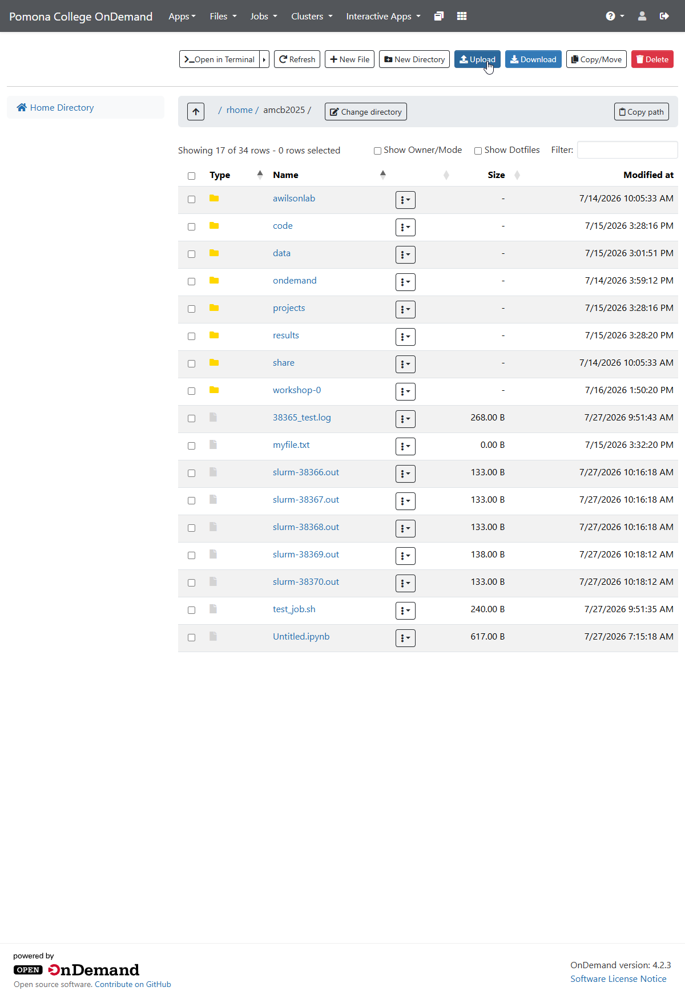
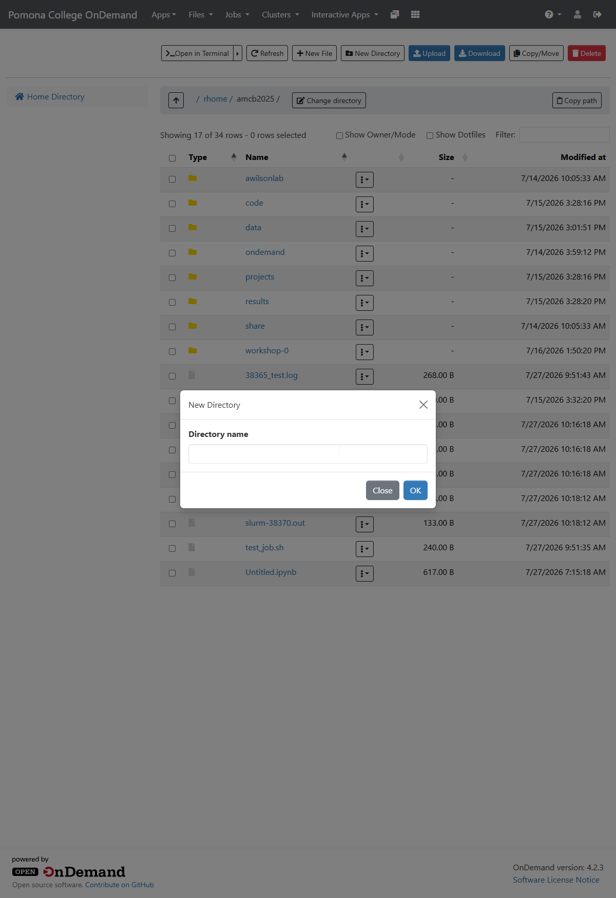
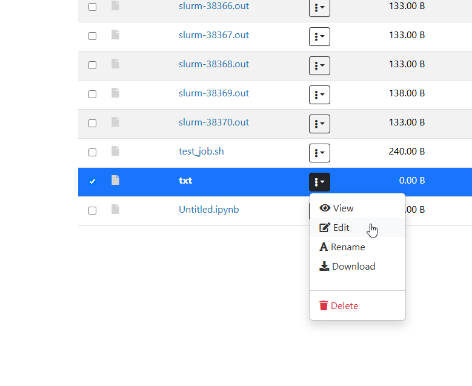
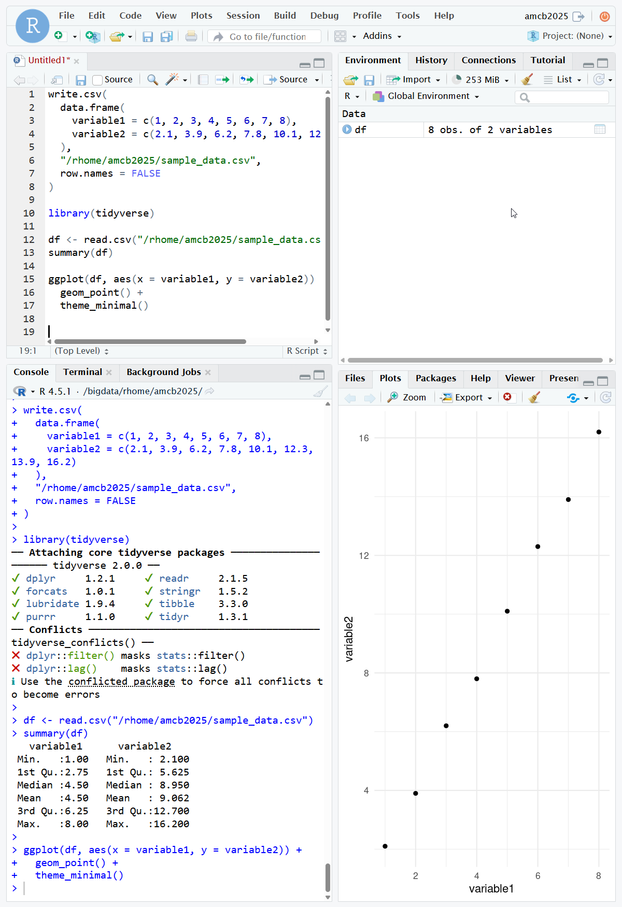
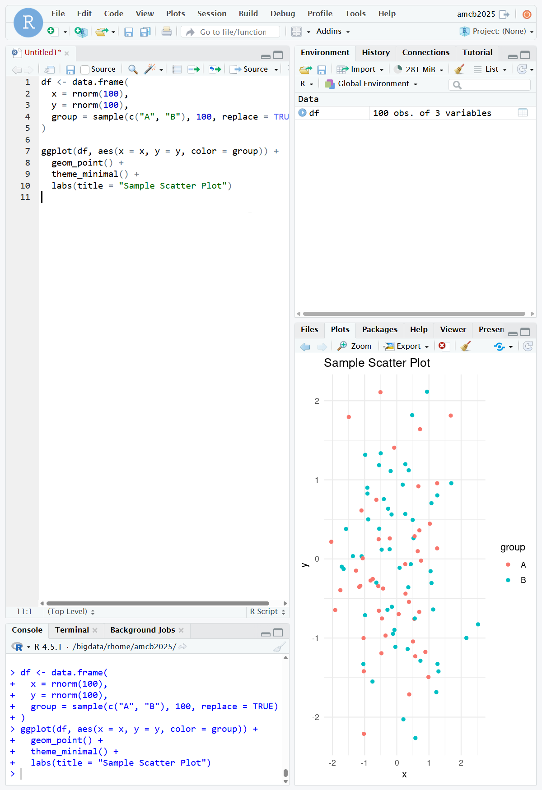
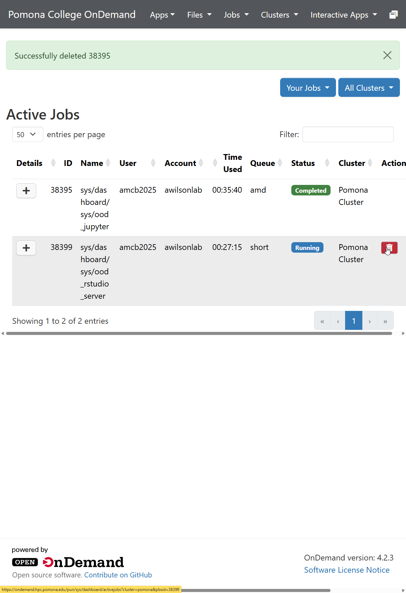

All in One View
Content from What is OnDemand?
Last updated on 2026-08-24 | Edit this page
Overview
Questions
- What is OnDemand and why use it?
- How does OnDemand differ from SSH?
- What are the benefits for HPC users?
Objectives
- Understand the purpose and benefits of OnDemand
- Learn the difference between OnDemand web interface and command-line SSH access
- Identify use cases where OnDemand is most valuable
Introduction to OnDemand
OnDemand is a web-based interface to access and control Sagehen HPC resources without requiring SSH knowledge or specialized terminal software. It provides a graphical dashboard through which you can manage files, submit jobs, monitor computations, and run interactive applications directly from your web browser.
Why Use OnDemand?
OnDemand provides several advantages over traditional SSH access:
- No SSH knowledge required: Access HPC resources through a familiar web browser
- Graphical file manager: Upload, download, and organize files without command-line tools
- Interactive applications: Run Jupyter notebooks, RStudio, and other interactive apps directly
- Job monitoring: Visualize job status and monitor resource usage in real time
- Multiple workspaces: Maintain different computational sessions simultaneously
- Mobile-friendly: Access resources from tablets and laptops with limited terminal capabilities
Perfect for Beginners
OnDemand is ideal if you’re new to HPC and prefer graphical interfaces. You can accomplish most common tasks without learning command-line tools. Point, click, and go!
OnDemand vs SSH Access
While SSH remains powerful for advanced users, OnDemand complements it by offering:
| Feature | OnDemand | SSH |
|---|---|---|
| Learning curve | Low | Steep |
| File management | Graphical | Command-line |
| Interactive apps | Direct support | Manual setup |
| Job submission | Web form | Script writing |
| Device compatibility | All browsers | Terminal only |
Accessing OnDemand
OnDemand at Pomona College is available at:
https://ondemand.hpc.pomona.edu/Access requires: - Valid Pomona College credentials - DUO Multi-Factor Authentication (MFA) - Active HPC account approved by your PI
What You Can Do in OnDemand
File Management
- Browse your home directory
(
/rhome/<myusername>) - Manage research data in /bigdata
- Upload and download files
- Create new directories
- Edit text files
Job Submission
- Submit batch jobs without writing SLURM scripts
- Monitor job progress
- View job output in real-time
- Cancel running jobs
Interactive Applications
- Launch Jupyter notebooks with GPU support
- Start RStudio for statistical computing
- Access web terminals for command-line work
- Run custom interactive applications
System Resources
- Check CPU and memory availability
- Monitor cluster status
- View node information
- Track quota usage
Important: Authentication Required
You’ll need valid Pomona College credentials and DUO Multi-Factor Authentication to access OnDemand. Ensure your HPC account is active before attempting to log in. Contact its-hpc@pomona.edu if you have access issues.
Challenge: Explore the Concept
Consider your typical workflow on Sagehen. Which tasks would benefit most from using OnDemand instead of SSH? Think about: 1. File management tasks 2. Data exploration work 3. Interactive development 4. Batch processing
There is no single correct answer, but common answers include: - File management: OnDemand is superior for uploading large datasets or browsing files - Data exploration: Jupyter notebooks through OnDemand are ideal for exploratory analysis - Learning: Beginners benefit from OnDemand’s graphical interface - Multiple tasks: OnDemand allows running several applications simultaneously in separate browser tabs - Mobile/remote: OnDemand works anywhere you have internet and a browser
Next Steps
Now that you understand what OnDemand offers, let’s explore the dashboard and learn to navigate its features.
- OnDemand is a web-based interface for accessing Sagehen HPC resources
- It requires no SSH knowledge and works in any modern web browser
- OnDemand is ideal for file management, interactive computing, and job monitoring
- Pomona’s OnDemand is available at https://ondemand.hpc.pomona.edu/
- OnDemand complements SSH access rather than replacing it
Content from Logging In and Dashboard Overview
Last updated on 2026-08-24 | Edit this page
Overview
Questions
- How do you log into OnDemand?
- What does the dashboard look like?
- How do you navigate between sections?
- Where can you find session and account information?
Objectives
- Log into OnDemand using Pomona credentials and DUO MFA
- Identify the main areas of the dashboard
- Navigate the top bar and side menu
- Manage sessions and log out properly
Logging In
- Open your browser and go to https://ondemand.hpc.pomona.edu/
- Enter your Pomona username and password
- Complete DUO Multi-Factor Authentication at https://duo.pomona.edu
- The dashboard loads with your available resources
After authentication, your session persists for several hours. Your browser maintains the connection, allowing seamless navigation between sections.
Dashboard Layout
Top Navigation Bar
The top of every OnDemand page contains:
- OnDemand Logo (left): Click to return to the dashboard from any page
- Menu Hamburger (left): Opens/closes the main navigation sidebar
- Help Links (right): Access documentation and support
- Account Menu (far right): Your username with a dropdown for settings and logout
Tip: Bookmark the Dashboard
Save https://ondemand.hpc.pomona.edu/ as a bookmark for quick access. You will return to this page frequently during your work sessions.
Status Indicators
OnDemand uses color-coded status indicators throughout the interface:
- Green: Job is running, connection is active
- Yellow/Orange: Job is queued or pending
- Red: Error or job has failed
- Gray: Completed or closed session
Session Management
- View active sessions in the “My Sessions” section
- Each session shows last access time and resource usage
- Sessions automatically expire after inactivity
- Check your Active Jobs regularly and close completed work to keep the dashboard clean
Logging Out
- Click your username (top right)
- Select “Sign Out”
- Always log out on shared or public computers
Contact its-hpc@pomona.edu if you have trouble logging in or accessing the dashboard.
-
Files section: Shows your files in
/rhome/<myusername>with upload and download buttons - Active Jobs: Displays a table with columns for job ID, name, user, status, time, and nodes
- Cluster view: Shows node status (idle, allocated, down) organized by partition
- Accounts/Usage: Displays CPU usage, storage quota, and job history
- Interactive Apps: A button or link to start Jupyter, RStudio, or Web Terminal
Common observations: - Different users may see different available partitions - Your quota depends on your research group allocation - The cluster status changes throughout the day as jobs complete and start
- Log in at https://ondemand.hpc.pomona.edu/ with Pomona credentials and DUO MFA
- The top navigation bar has the logo, menu, help links, and account dropdown
- The side menu organizes access through Files, Jobs, Apps, and Clusters
- Color-coded indicators show job and resource status at a glance
- Always log out on shared computers to protect your account
Content from Uploading, Downloading, and Editing Files
Last updated on 2026-08-24 | Edit this page
Overview
Questions
- How do you upload files to Sagehen through OnDemand?
- How do you download files back to your local computer?
- How do you create, rename, move, and delete files?
- Can you edit files directly in the browser?
Objectives
- Upload single and multiple files using the web interface
- Download files and directories from Sagehen
- Create directories and organize files
- Edit text files directly in OnDemand
- Manage file permissions through the browser
OnDemand File Manager
The file manager provides a graphical interface for managing files on Sagehen without using SCP or SFTP. Access it through the Files menu in the left navigation.
Uploading Files
Single File Upload
- Navigate to the desired directory in the file manager
- Click the Upload button (up arrow icon)
- Choose a file from your local computer
- Click Start Upload and wait for the progress bar to complete

Downloading Files
- Open the file’s dropdown menu (⋮) and select Download, or click the file and use the toolbar Download button
- For multiple files, select them with checkboxes, then click Download Selected – they arrive as a ZIP archive
- Downloads go to your browser’s default Downloads folder
File Operations
Creating Directories
- Click New Directory
- Enter a name (e.g., “analysis_2026”)
- Click Create

Renaming
- Open the file’s dropdown menu (⋮) and select Rename
- Enter the new name and press Enter

Inline Text Editing
OnDemand includes a built-in editor for text files (.txt, .sh, .py, .R, and similar):
- Select a text file and click Edit (or double-click)
- The editor opens in your browser with syntax highlighting
- Make changes and click Save
For files larger than 10 MB, use a command-line editor in the Web Terminal instead.
Managing Permissions
- Use the file’s dropdown menu (⋮) a file and select Properties or Permissions
- View current permissions (e.g.,
-rw-r--r--) - Adjust read/write/execute for owner, group, and others
For executable scripts, ensure you mark them with execute permission.
Storage Quotas
Check your usage in Accounts > Usage or run
quota_check.sh in the Web Terminal. Monitor regularly to
avoid hitting limits mid-project.
Best Practice: Regular Cleanup
Check your storage quota monthly to avoid hitting limits mid-project. Remove old temporary files and archive completed work. If approaching quota limits, contact its-hpc@pomona.edu to request an increase rather than deleting valuable research data.
Challenge: Upload, Organize, and Download
- Create a file on your local computer called “sample_data.txt” with some text
- Log into OnDemand and upload this file to /bigdata
- Create a new subdirectory called “project_2026”
- Move sample_data.txt into project_2026
- Download the file back to your computer to verify the transfer
Then check: How much storage are you currently using? Is your quota close to the 1 TB limit?
- Your sample_data.txt uploads to /bigdata (typically
/bigdata/lab/<labname>) - The new directory “project_2026” appears immediately
- Moving the file into the subdirectory works via drag or cut/paste
- Downloading returns the original file content intact
- Run
quota_check.shin the Web Terminal to see your current usage
Common observations: - Upload/download speeds depend on file size and your internet connection - Creating directories is instant - File operations in OnDemand are slower than command-line but more intuitive - Your /rhome and /bigdata share the same 1 TB lab quota
- Upload files via drag-and-drop, single select, or multi-select
- Download single files directly or multiple files as a ZIP archive
- Create, rename, move, and delete files through the graphical interface
- Edit text files directly in the browser with syntax highlighting
- File permissions can be viewed and changed through the web interface
- Monitor your quota regularly with quota_check.sh or Accounts > Usage
Content from Shell Access and Command-Line Computing
Last updated on 2026-08-24 | Edit this page
Overview
Questions
- How do you access the command line through OnDemand?
- What is a Web Terminal session?
- How do you manage multiple terminal sessions?
- What commands are available in OnDemand shell access?
Objectives
- Launch and use the Web Terminal from OnDemand
- Execute HPC commands without SSH
- Manage multiple concurrent terminal sessions
- Navigate the file system and manage resources using shell
- Understand limitations and best practices for web-based terminals
Web Terminal Access
The Web Terminal in OnDemand provides a full command-line shell through your browser, eliminating the need to install SSH clients or learn command-line interfaces. It connects to a login node on Sagehen.
Important: Login vs. Compute Nodes
The Web Terminal connects to a login node, designed for small, quick tasks like editing files and submitting jobs. For intensive computations, submit SLURM jobs instead. Running computationally heavy tasks on the login node can affect other users.
Launching the Web Terminal
Method 1: Through Interactive Apps
- Open OnDemand at https://ondemand.hpc.pomona.edu/
- Navigate to “Interactive Apps” menu (left sidebar)
- Find and click “Web Terminal” or “Shell Access”
- Click “Launch”
- After a brief loading period, a terminal window opens in your browser
Using the Web Terminal
Basic Operations
The Web Terminal behaves like a standard Linux terminal. You can execute standard commands for:
- Checking your current directory: pwd
- Listing files: ls, ls -la
- Changing directories: cd
/rhome/<myusername> - Viewing file contents: cat, head
- Creating directories: mkdir
- Copying and moving files: cp, mv
Text Editing
You can use command-line editors from the web terminal:
- Nano: A beginner-friendly editor (Ctrl+X to exit)
- Vim: An advanced editor (:wq to save)
- Default editor: edit command for text files
Job Submission
Submit SLURM jobs directly from the terminal with sbatch. View job status with squeue. Cancel jobs with scancel. Check cluster information with sinfo.
A typical job script includes:
#!/bin/bash
#SBATCH --job-name=MyJob
#SBATCH --partition=normal
#SBATCH --nodes=1
#SBATCH --time=01:00:00
#SBATCH --output=job.log
echo "Starting job at $(date)"
sleep 30
echo "Job complete"Multiple Terminal Sessions
Opening Multiple Terminals
You can open multiple terminal windows simultaneously through OnDemand. Each terminal is independent and can run different tasks. Use multiple terminals to monitor jobs while editing code, or to run multiple processes in parallel.
Browser tabs help organize your work:
- Rename tabs to identify their purpose
- Switch between tabs with mouse or keyboard shortcuts
- Closing a tab closes that terminal session
File Operations in the Terminal
Working with Data
Standard Linux commands work for file operations:
- wc -l: Count lines in files
- grep: Search for patterns in text
- sort and uniq: Organize data
- tar and gzip: Compress and archive files
- File manipulation: ls, cp, mv, rm, etc.
Monitoring and Resource Management
Terminal Limitations and Considerations
The Web Terminal has some important limitations:
- Interactive programs may have limited support
- Can only connect to systems accessible from Sagehen
- Long-idle sessions may disconnect
- Copy-paste works with Ctrl+C/Ctrl+V
- Personal SSH keys are available for other systems
Best Practices for Web Terminal
- Don’t leave idle terminals open; close ones you’re not actively using
- Use screen or tmux for long-running processes that survive disconnections
- Save work frequently in case of unexpected disconnections
- Write temporary files to /scratch, not /rhome
- Monitor resources with squeue before launching new jobs
- Cancel idle jobs with scancel to free resources
Pro Tip: Use screen or tmux
For long-running processes, use screen or
tmux to create persistent sessions that survive browser
disconnections. Start your process inside a screen session, then detach
with Ctrl+A+D. Reconnect later even after closing your terminal.
Troubleshooting Terminal Issues
- Slow performance: Try a different browser or check network
- Copy-paste issues: Try Ctrl+Shift+C/Ctrl+Shift+V
- Disconnections: Open new terminal and check squeue for jobs
- Command not found: Load required module with module load
- Permission denied: Check file permissions with ls -l
Challenge: Command-Line Computing
Use the Web Terminal to complete these tasks:
- Navigate to your /rhome directory and list all files
- Create a new directory called “my_analysis”
- Create a simple Python script that prints “Hello from Sagehen!”
- Run the Python script from the terminal
- Check the current status of the Sagehen cluster with sinfo
- View any jobs you have running with squeue -u $USER
Record what you observe, especially:
- How many nodes are in the cluster?
- What partitions are available?
- Are you currently running any jobs?
After completing this challenge:
- Your /rhome directory contains configuration files and personal data
- The new directory appears in listings with mkdir
- Your Python script executes successfully, printing the output
- sinfo shows the cluster composition with nodes in various partitions
- squeue -u $USER shows your jobs if running, or an empty table
- You see partition information and node status
Common observations:
- Most nodes are idle or allocated during normal times
- Jobs have IDs starting from recent numbers
- Python/Python3 is available without module loading
- The terminal responds quickly to most commands
- Complex file operations work just like SSH access
- Cluster status changes throughout the day as jobs complete
Accessing Sagehen via SSH (Alternative)
While the Web Terminal is convenient, some users prefer SSH for direct access:
ssh <myusername>@sagehen.hpc.pomona.edu
ssh -i ~/.ssh/id_rsa <myusername>@sagehen.hpc.pomona.eduSSH provides the same shell access but requires pre-configured authentication on your local computer.
- Web Terminal provides full command-line access through your browser
- Launch from Interactive Apps or Clusters menu in OnDemand
- Run standard Linux commands, submit SLURM jobs, and manage files
- Multiple terminal sessions can run independently for parallel work
- Use screen/tmux for long-running processes that survive disconnections
- Web Terminal is convenient for beginners; SSH is available for advanced users
Content from Launching Jupyter Notebooks
Last updated on 2026-08-24 | Edit this page
Overview
Questions
- How do you launch a Jupyter notebook from OnDemand?
- How do you configure resources for your notebook session?
- How do you use notebook cells, run code, and write documentation?
- How do you install additional Python packages?
Objectives
- Launch a Jupyter notebook session from OnDemand
- Configure CPU, memory, and time for your session
- Create and execute code and markdown cells
- Upload data and install packages in the notebook environment
Launching Jupyter
- Click Interactive Apps in the left sidebar
- Select Jupyter Notebook (or Jupyter Lab)
- Configure your resources:
- CPU cores: 1–4 for most work
- Memory: 4–16 GB depending on dataset size
- Time: 1–8 hours
- GPU (optional): Select if you need accelerated computing
- Click Launch
- Wait for allocation (typically 1–5 minutes)
- Click Connect to Jupyter when the session is ready
First Launch Takes Time
When you request Jupyter, expect to wait 1–5 minutes for resource allocation, especially during busy hours. The system is requesting compute nodes for your session. Subsequent launches typically start faster.
Using Jupyter Notebooks
Creating a Notebook
Click New then Python 3 to create a
new notebook. Each notebook is a .ipynb file saved in your
working directory.
Cell Types and Execution
- Code cells: Write Python code and press Shift+Enter to execute
- Markdown cells: Write formatted text, headings, and documentation
- Output: Results, tables, and plots appear directly below each cell
A common first cell:
Session Management
- Sessions expire after idle time or when the requested time limit is reached
- Save your work frequently with Ctrl+S
- Download important notebooks before your session expires
- Check remaining time in the OnDemand Active Jobs view
Use batch jobs (sbatch) for computations longer than 8
hours instead of interactive Jupyter sessions.
Challenge: Create Your First Notebook
Launch a Jupyter notebook from OnDemand with 1 core, 4 GB memory, and 1 hour
Create a new Python 3 notebook
In cell 1, import numpy, pandas, and matplotlib
-
In cell 2, create a sample dataset:
-
In cell 3, create a histogram:
Save your notebook
- Jupyter launches after 1–5 minutes of resource allocation
- A new notebook opens with an empty code cell
- All three libraries import without errors
-
df.describe()prints count, mean, std, min, max, and quartiles - A histogram appears inline showing a normal distribution centered around 50
- The notebook saves as an
.ipynbfile in your working directory
If your session takes a long time to start, the cluster may be busy – try reducing your resource request or launching during off-peak hours.
- Launch Jupyter from Interactive Apps with configurable CPU, memory, and time
- Expect 1–5 minutes for initial resource allocation
- Use code cells for Python and markdown cells for documentation
- Install packages with !pip install directly in notebook cells
- Save work frequently and download notebooks before sessions expire
- Use batch jobs for computations longer than 8 hours
Content from RStudio and GPU Resources
Last updated on 2026-08-24 | Edit this page
Overview
Questions
- How do you launch RStudio from OnDemand?
- What is the RStudio interface layout?
- How do you request GPU resources for interactive apps?
- How do you verify GPU access in Jupyter or R?
Objectives
- Launch an RStudio session and navigate the interface
- Execute R code and install R packages
- Request GPU resources when launching interactive apps
- Verify GPU availability and use GPU-accelerated libraries
Launching RStudio
- Click Interactive Apps in the left sidebar
- Select RStudio Server
- Configure resources (similar to Jupyter – cores, memory, time)
- Click Launch and wait for allocation
- Click Connect to RStudio when the session is ready
RStudio Interface Layout
Once launched, RStudio provides four panels:
- Script editor (top-left): Write and save R scripts
- Console (bottom-left): Execute R commands interactively
- Environment/History (top-right): View loaded variables and command history
- Files/Plots/Packages (bottom-right): Browse files, view plots, manage packages
Running R Code
Write code in the script editor or directly in the console:
First create a small sample file to work with, then read it back,
summarize, and plot (in real work you would read your own data from
/bigdata/lab/<labname>/ instead):
R
library(tidyverse)
# Create a small sample dataset in your home directory
dir.create("~/rstudio-demo", showWarnings = FALSE)
write.csv(data.frame(variable1 = rnorm(8), variable2 = rnorm(8)),
"~/rstudio-demo/data.csv", row.names = FALSE)
df <- read.csv("~/rstudio-demo/data.csv")
summary(df)
ggplot(df, aes(x = variable1, y = variable2)) +
geom_point() +
theme_minimal()

Installing R Packages
In the console:
R
install.packages("ggplot2")
install.packages("dplyr")
library(ggplot2)
Or use the Packages tab in the bottom-right panel to install graphically.
Save Your Work
Interactive sessions have time limits. Save scripts and results frequently with Ctrl+S. Download important files or save to /bigdata for durability. Do not wait until your session expires – save early and often.
Requesting GPU Resources
When launching Jupyter or RStudio, select GPU options in the resource form:
- GPU type: A100 (80 GB) or L40S (48 GB)
- GPU count: Usually 1 for interactive work
-
Partition: Select
gputo access GPU nodes
Resource Guidelines
- Small datasets (< 100 MB): 1–2 cores, 4 GB memory, no GPU
- Medium datasets (100 MB – 10 GB): 2–4 cores, 8–16 GB memory
- GPU work: Request only when needed – GPUs are a shared resource
- Close sessions when finished to free resources for others
Challenge: Launch RStudio and Explore
Launch RStudio from OnDemand with 1 core, 4 GB memory, and 1 hour
In the console, load the tidyverse package:
library(tidyverse)-
Create a sample data frame:
R
df <- data.frame( x = rnorm(100), y = rnorm(100), group = sample(c("A", "B"), 100, replace = TRUE) ) -
Create a scatter plot:
R
ggplot(df, aes(x = x, y = y, color = group)) + geom_point() + theme_minimal() + labs(title = "Sample Scatter Plot") Save the plot with
ggsave("scatter.png")

- RStudio launches after resource allocation (1–5 minutes)
- tidyverse loads with some startup messages (this is normal)
- The data frame appears in the Environment panel showing 100 observations of 3 variables
- A scatter plot appears in the Plots panel with points colored by group
- The file “scatter.png” is saved in your working directory and visible in the Files panel
If tidyverse is not installed, run
install.packages("tidyverse") first – this may take a few
minutes.
- Launch RStudio from Interactive Apps with configurable resources
- RStudio provides script editor, console, environment, and files/plots panels
- Install R packages from the console or the Packages tab
- Request GPU resources by selecting the gpu partition and GPU type (A100, L40S, RTX PRO 6000)
- Verify GPU access with torch.cuda.is_available() in Python or tf in R
- Save your work frequently – sessions have time limits
Content from Submitting Batch Jobs
Last updated on 2026-08-24 | Edit this page
Overview
Questions
- How do you submit batch jobs through OnDemand?
- What is the difference between Quick Submit and uploading a script?
- How do you write a basic SLURM job script?
- How do you submit GPU jobs and job arrays?
Objectives
- Access the Job Composer in OnDemand
- Submit jobs using Quick Submit and script upload
- Write a basic SLURM batch script
- Submit GPU jobs and job arrays
Accessing the Job Composer
- Click Jobs in the left sidebar
- Select Job Composer
- You see any previously created jobs
- Click New Job to create and submit a new job
Test Your Scripts First
Before submitting a job to compute nodes, test your script logic in the Web Terminal or with a small test dataset. This saves compute resources and helps you catch errors before they run on expensive hardware.
Quick Submit
- Click New Job
- Fill in the job details:
- Job name: A descriptive name (e.g., “Analysis_2026”)
-
Partition:
amd,gpu, orshort(amdandgpuallow up to 30 days / 720 hours;shorthas a shorter walltime — checksinfo -p short) - Nodes: Usually 1
- Time limit: Hours and minutes needed
- Memory: Total RAM (leave blank for default)
- Paste your script content in the editor
- Click Submit
Upload a Script
- Click New Job then Upload
- Select a SLURM script file from your computer
- Review and modify parameters if needed
- Click Submit
Writing a SLURM Script
A basic batch script:
BASH
#!/bin/bash
#SBATCH --job-name=MyJob
#SBATCH --partition=amd
#SBATCH --nodes=1
#SBATCH --ntasks=4
#SBATCH --time=02:00:00
#SBATCH --output=job.log
#SBATCH --error=job.err
cd $SLURM_SUBMIT_DIR
module load miniconda3
python3 analysis.pyKey directives: --job-name identifies the job,
--partition selects the queue, --time sets the
wall-clock limit, and --output/--error capture
stdout and stderr.
GPU Job Submission
To request GPU resources, use the gpu partition with
--gres:
BASH
#!/bin/bash
#SBATCH --job-name=GPUJob
#SBATCH --partition=gpu
#SBATCH --nodes=1
#SBATCH --gres=gpu:1
#SBATCH --time=04:00:00
#SBATCH --output=gpu_job.log
module load miniconda3 cuda/12.2.1
conda activate pytorch_env # your conda env with PyTorch (see the ML workshop)
python3 train_model.pyRequest a specific GPU type with --gres=gpu:a100:1,
--gres=gpu:l40s:1, or
--gres=gpu:rtxpro6000:1.
Job Arrays
Submit multiple similar jobs at once:
BASH
#!/bin/bash
#SBATCH --job-name=analysis
#SBATCH --array=1-10
#SBATCH --partition=amd
#SBATCH --time=01:00:00
python3 analysis.py input_${SLURM_ARRAY_TASK_ID}.txtEach array task gets a unique $SLURM_ARRAY_TASK_ID (1
through 10 in this example), letting you process multiple input files
with one submission.
Challenge: Submit and Monitor a Job
- Use Job Composer to create a job that:
- Prints “Job starting at $(date)”
- Sleeps for 30 seconds
- Prints “Job completed at $(date)”
- Submit the job to the
amdpartition - Watch the job progress in Active Jobs
- When complete, view the output log
- Note how long the job took (queue wait + runtime)
- Your script runs successfully on the compute node
- Active Jobs shows the job progressing: Pending then Running then Completed
- The output log shows your date stamps and confirms completion
- Total time includes queue wait (seconds to minutes) plus the 30-second sleep
- Job ID is a unique number assigned by SLURM
Common observations:
- Queue time varies based on cluster load
- Output appears in the log file after job completion
- The
amdandgpupartitions each allow jobs up to 30 days (720 hours); theshortpartition has a shorter max walltime — checksinfo -p shortfor the current limit
- Access the Job Composer through Jobs in the left sidebar
- Quick Submit lets you paste a script; Upload lets you use an existing file
- SLURM directives control partition, time, nodes, and output locations
- Use –partition=gpu and –gres=gpu:1 for GPU jobs
- Job arrays let you submit many similar jobs with one script
- Sagehen offers three partitions:
amd,gpu(both with 30-day max walltime), andshort(shorter max walltime, good for quick test/debug jobs — checksinfo -p short)
Content from Monitoring Jobs and Troubleshooting
Last updated on 2026-08-24 | Edit this page
Overview
Questions
- How do you monitor running jobs in OnDemand?
- Where do you find job output and error logs?
- How do you debug a failed job?
- What are typical queue wait times and job limits?
Objectives
- Use the Active Jobs view to monitor job status
- Retrieve and interpret output and error logs
- Debug common job failures using error messages
- Understand job limits, queue status, and scheduling basics
Active Jobs View
Navigate to Jobs then Active Jobs to see all your jobs. Each entry shows:
- Job ID: Unique identifier assigned by SLURM
- Name: Job name from your script
- Status: Running (green), Pending (yellow), Completed (blue), Failed (red)
- Time: How long the job has been running
- Nodes: Which compute node(s) the job is using
Job Details
Click on any job to see:
- Partition and node assignments
- Resource allocation (CPU cores, memory, GPUs)
- Time information (submission, start, estimated end)
- Links to output and error files
Real-Time Monitoring
While a job is running:
- Click on the job in Active Jobs
- Click View Output or View Error
- Refresh your browser to see the latest output
- Useful for tracking progress and catching problems early
Retrieving Output and Error Logs
After a job completes, OnDemand saves:
-
job.log (or your
--outputfilename): Standard output from your script -
job.err (or your
--errorfilename): Error messages and warnings - Result files: Any files your script created
Access these through the Active Jobs detail view or the Files section.
Debugging Failed Jobs
When a job fails, check the error log for these common messages:
| Error Message | Cause | Fix |
|---|---|---|
| “module not found” | Module load failed | Check module name with module avail
|
| “file not found” | Wrong input path | Use absolute paths like
/bigdata/lab/<labname>/file
|
| “out of memory” | Job needs more RAM | Increase --mem and resubmit |
| “timeout” / “time limit” | Job exceeded wall time | Increase --time (max 720 hours) |
| “permission denied” | Wrong file permissions | Check with ls -l and fix with chmod
|
Fix the issue in your script, then resubmit through Job Composer.
Canceling Jobs
- Find the job in Active Jobs
- Click the red delete (trash-can) button in the job’s row
- Confirm — a green “Successfully deleted
” banner appears - The job stops immediately and resources are freed
You can also cancel from the Web Terminal with
scancel <job_id>.

Job Constraints and Limits
Sagehen enforces limits for fair resource sharing:
-
Time: Max 720 hours (30 days) per job on
amdandgpupartitions; theshortpartition has a shorter max walltime — checksinfo -p short -
GPU limit: GPU usage limits per user are configured
in SLURM; check
sacctmgr show user $USERor contact its-hpc@pomona.edu for current limits. - Queue position: Based on submission time and fairness policies
Queue Status and Scheduling
Check cluster status through Jobs then
Cluster, or run sinfo in the Web Terminal.
The view shows available nodes by partition, node status (idle,
allocated, down), and current queue depth.
Check Cluster Status
Before submitting large jobs, run sinfo in the Web
Terminal or check Jobs > Cluster to
see available resources. Submit during off-peak hours (evenings and
weekends) for faster execution. Small jobs typically start faster than
large ones.
Typical Wait Times
- amd partition: Usually minutes to hours depending on cluster load
- gpu partition: May wait longer when GPUs are in high demand
- short partition: Typically the fastest to start because the scheduler can back-fill short jobs between longer ones
- Off-peak hours: Jobs typically start faster (evenings and weekends)
- Smaller resource requests: Generally queue for less time
Scheduling Basics
- Your job enters the queue when submitted
- SLURM allocates resources based on job requirements, availability, and fairness
- When resources become available, the job starts
- The job completes and resources are freed for others
Priority depends on your recent usage history, number of running jobs, and time since your last job completed.
Challenge: Debug a Failed Job
A job submitted the following script but failed. Review the error log below and identify the problem:
#!/bin/bash
#SBATCH --job-name=analysis
#SBATCH --partition=amd
#SBATCH --time=00:10:00
#SBATCH --output=analysis.log
#SBATCH --error=analysis.err
module load miniconda3
cd /bigdata/lab/<labname>/project
python3 run_analysis.py --input data.csv --output results.csvError log (analysis.err):
/var/spool/slurmd/job12345/slurm_script: line 9:
cd: /bigdata/lab/<labname>/project: No such file or directory
python3: can't open file '/bigdata/lab/<labname>/project/run_analysis.py':
[Errno 2] No such file or directoryWhat went wrong, and how would you fix it?
The error shows two problems caused by the same root issue:
-
The directory
/bigdata/lab/<labname>/projectdoes not exist. Either the lab name is wrong or the directory was never created. -
The Python script cannot be found because the
cdfailed and the script is not at the default path.
To fix: - Verify the correct lab directory name (check in OnDemand
Files > bigdata) - Create the directory if it does not exist:
mkdir -p /bigdata/lab/<labname>/project - Confirm the
script run_analysis.py and data.csv are in
that directory - Resubmit the job after fixing the path
Always use ls to verify paths before submitting
jobs.
- Active Jobs shows real-time status with color-coded indicators
- Click any job to see details, output logs, and error logs
- Common failures include wrong paths, missing modules, and insufficient resources
- Cancel jobs from Active Jobs or with scancel in the terminal
- Sagehen offers three partitions:
amdandgpu(each up to 720 hours / 30 days) andshort(shorter max walltime, good for quick test/debug jobs — checksinfo -p short) - Check cluster status before submitting and prefer off-peak hours for faster starts